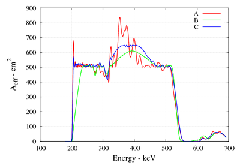

Algoritmi genetici
Ottimizzazione di lenti di Laue
Sto studiando e realizzando con successo dei programmi che
utilizzano Algoritmi Genetici per ottimizzare l'area efficacie di
lenti di Laue.
Grazie all'algoritmo genetico e' possibile ottenere una
distribuzione dei cristalli sulla lente che dia un risultato quasi ottimale,
un problema altrimenti troppo difficile da risolvere.
Come vi accorgerete leggendo il seguito, il lessico utilizzato
e' quasi totalmente mutuato dalla biologia, come tipico di questa tecnica oramai
consolidata!
L'idea alla base di questa tecnica e' la seguente: la distribuzione
dei cristalli sulla lente si puo' codificare in una struttura di dati
esattamente come in natura il DNA caratterizza un essere vivente.
Ogni lente, con la sua peculiare distribuzione di cristalli, e'
caratterizzata da uno specifico genoma.
Ovviamente a diverse disposizioni di cristalli (diversi genotipi)
corrispondono differenti caratteristiche e proprieta' fisiche.
In particolare nopi siamo interessati al valore di area efficacie
in funzione dell'energia, parametro che vogliamo ottimizzare e
che fara' la differenza nella sopravvivenza e nelle possibilita'
di una lente di tramandare il proprio genotipo.
Consideriamo esclusivamente lenti composte di anelli concentrici,
e ad ogni anello associamo una sorta di gene composto dalle seguenti
informazioni:
- Numero di cristalli di Cu(111);
- Numero di cristalli di Cu(200);
- Numero di cristalli di Ge(111);
- Numero di spazi vuoti.
Il genotipo e' quindi la sequenza di tutti i geni specifici
degli anelli che compongono la lente.
Noto il genotipo e' possibile calcolare il fenotipo (l'area efficacie)
e valutare la sua bonta' tramite una funzione che viene chiamata
fitness function.
Quando il software gira, crea inizialmente un villaggio di lenti
con genotipi casuali o forniti dall'utente e ad ogni iterazione
decide in base al valore della fitness function quali siano
gli elementi che sopravvivono.
Gli altri vengono gentilmente soppressi e rimpiazzati da tre tipi
di individui
- gli stranieri;
- i neonati;
- i mutanti;
I 3 tipi di individui hanno un'efficacia diversa nel migliorare la qualita' del villaggio a seconda che si sia all'inizio a meta' o alla fine dell'evoluzione: piu' ci si avvicina all'ottimo piu' le mutazioni e' bene siano limitate.
Gli stranieri rappresentano nuovi elementi con un genotipo totalmente casuale.
I neonati sono figli di due elementi sopravvissuti e il loro genotipo e' il crossover di quello dei genitori.
I mutanti sono elementi ottenuti clonando un elemento di successo e mutando uno (o pochi) geni.
La scelta piu' conveniente per le ottimizzazioni fini e' quella di cambiare un solo cristallo (o spazio vuoto) alla volta.
I migliori elementi di tre diversi villaggi sono mostrati nella seguente figura.

I tre elementi di successo sono ottenuti soddisfando richieste diverse:
- Elevato valore di area efficacie;
- Elevata regolarita' della curva;
- Un ragionevole compromesso tra i due;
Ovviamente quello proposto e' un semplice esempio!
Il numero di generazione necessario per ottenre un risultato
soddisfacente dipende dalle scelte dell'utente (numero di abitanti del villaggio,
numero relativo di stranieri, figli e mutanti prodotti e implementazione della funzione che genera il crossover.)
Alla fine diventa pure divertente giocare con questi esserini! :)
|